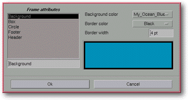

<!-- Documentation Xclamation (c)1994-2000 AXENE contact axene@axene.org>
<html>

<head>
<title>Frame Attributes</title>
</head>

<body BGCOLOR="#FFFFFF" BACKGROUND="Images/back.gif" TEXT="#000000">

<p ALIGN="right">  </p>

<p><br>
<br>
This dialog box sets various frame features. It can only be opened if one or more frames
are selected. To view this dialog box, use the <i>&quot;<a HREF="Menu_Frame.html">Frame</a>
/ <a HREF="Menu_Frame.html#attributes_menu_entry">Attributes...</a>&quot;</i> roll-down
menu or double click on a frame. <br>
<br>
</p>

<hr>

<p><br>
</p>

<p align="center"> <br>
<small><i>Screen shot: Frame attributes dialog box </i></small></p>

<p><br>
</p>

<hr>

<p><br>
</p>

<h3>Left portion of the dialog box:</h3>

<ul>
  <li><a NAME="frame_list">The <b>frames List</b> shows the frames currently selected. Each
    frame has a title, which by default is <i>&quot;Frame X&quot;</i>, where X is a number.
    When selecting an element from the list, the characteristics of the corresponding frame
    appear on the right. Several elements can be selected by using the control key. </a><br>&nbsp;</li>
  <li><a NAME="edit_frame_name">The text field just below the frames list may <b>modify a
    frame name</b> selected in the list. </a><br>&nbsp;</li>
</ul>

<p><br>
</p>

<h3>Right portion of the dialog box:</h3>

<ul>
  <li><a NAME="background_color_list">The <i>&quot;Background color&quot;</i> roll-down menu <b>selects
    the background color</b> for the frame selected in the list. This color list can be
    modified using the '</a><a HREF="Box_Color.html">Color Preparation</a>' dialog box. <br>&nbsp;</li>
  <li><a NAME="border_color_list">The <i>&quot;Border color&quot;</i> roll-down menu <b>selects
    a color for the selected frame's border</b>. This color list can be modified using the '</a><a HREF="Box_Color.html">Color Preparation</a>' dialog box. <br>&nbsp;</li>
  <li><a NAME="thickness_textfield">The <i>&quot;Border Thickness&quot;</i> text field <b>defines
    the border's thickness</b> in typographic points. This value must be set between 0(pt) and
    99(pt). Frame thickness does not show up on Xclamation's display screen; however, it is
    displayed upon printing. </a><br>&nbsp;</li>
  <li><a NAME="frame_preview">The <b>Preview Area</b> displays a preview of a rectangular
    frame's various features. </a><br>&nbsp;</li>
</ul>

<p><br>
</p>

<h3>Lower portion of the dialog box:</h3>

<ul>
  <li><a NAME="button_ok"><i>&quot;Ok&quot;</i> <b>confirms all the actions</b> carried out on
    the selected frames and closes the dialog box. </a><br>&nbsp;</li>
  <li><a NAME="button_cancel"><i>&quot;Cancel&quot;</i> <b>cancels all actions</b> and closes
    the box. </a><br>&nbsp;</li>
</ul>

<p><br>
</p>

<hr>

<p ALIGN="right"></p>
</body>
</html>
